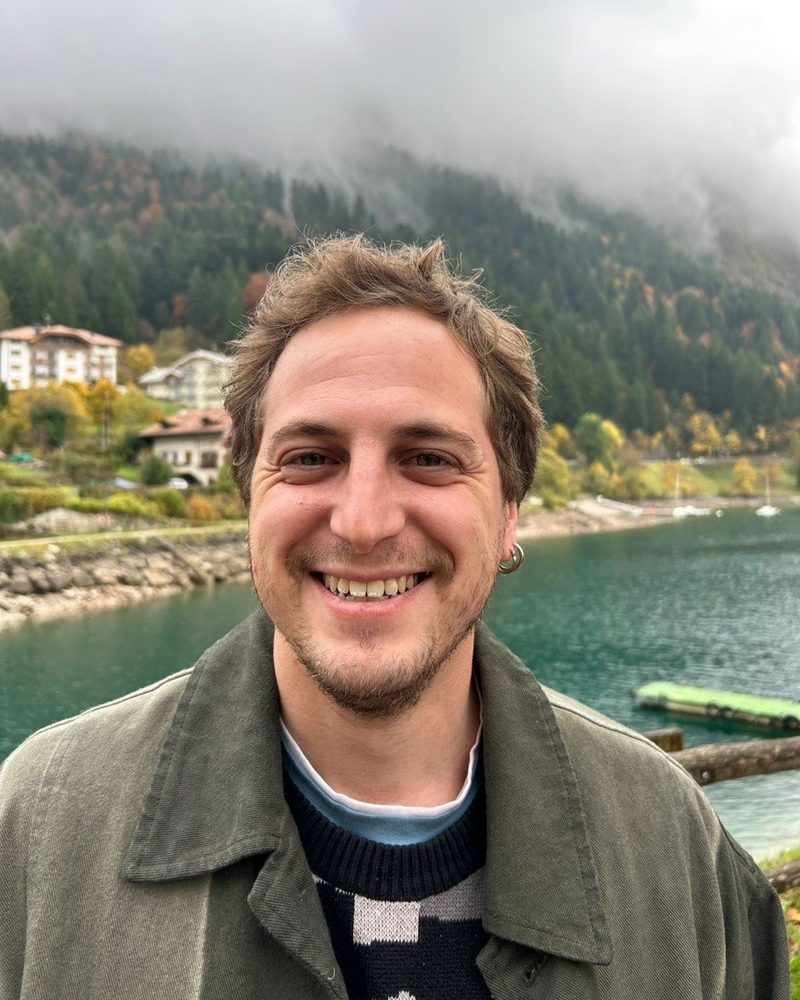

Enfoque
Maneras en que te puedo ayudar
Dónde está la oportunidad
Foundational research, market fit, cultura, segmentación y tendencias para decidir dónde jugar y a quién hablarle antes de diseñar.
Qué y cómo construir
Product discovery research, tests de concepto, usabilidad y priorización con evidencia, codo a codo con producto y diseño.
Cómo se usa lo construido
Experience evaluative research, journey maps, blueprints, métricas de satisfacción y datos de comportamiento para entender el porqué detrás de cada movimiento.
Casos
Casos seleccionados
Seleccioná el caso que más te interese.
Cómo trabajo
Del problema de negocio a la decisión
Más trabajo
Laboratorio
Fast paced research
Un agente de análisis entrenado con metodología

Las mejores decisiones empiezan por una buena pregunta. Hablemos.
Sobre mí
Martín Zlotnik
Siempre me atrajo el porqué detrás de lo que hace la gente: por qué confía en un producto y no en otro, por qué deja de usar una app que antes le encantaba, por qué el dinero significa algo distinto según quién lo tenga. La antropología me enseñó a construir esas preguntas para obtener esas respuestas. El research y el trabajo de producto, a convertirlas en decisiones.
Mi último rol fue como Senior UX & Strategic Researcher en un gran grupo latinoamericano de banca, fintech, delivery, retail y turismo. En el último tramo me acerqué al lado de producto y datos: métricas de salud de clientes, segmentación comportamental y análisis de churn, para ayudar a los equipos a entender no solo qué dicen los números, sino qué pasa detrás de ellos. Antes estuve haciendo research para una software factory y para una agencia con clientes de consumo masivo.
Soy antropólogo social y cultural, egresado de la UBA. Hice cursos y capacitaciones en estadística aplicada, UX Research y UX Design.